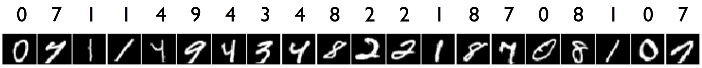

Neural Networks
| Theme | Objectives (after the course, you ...) |
| Neural networks |
|
Episode 7: Neural networks from the perceptron to multilayer models
This episode develops neural networks from a single linear neuron to a trainable multilayer model. MNIST provides a running example: each image contains 28 × 28 pixel values and the task is to predict one of ten digit classes.

Examples from MNIST. Even human readers may disagree about ambiguous handwriting.
Introduction to Neural Networks
In this part, you will be introduced to neural networks—a family of models that, since 2012, have steadily achieved dominance in new applications, becoming the de facto standard in many fields.
Neural networks were first conceptualized in the 1970s. However, the technical capabilities and understanding required to train large-scale neural networks only emerged around 2011, providing a significant boost to their development. The collective set of neural network approaches and the broader scientific study of them is referred to as deep learning.
Deep learning is based on two key ideas:
- End-to-End Learning: Traditionally, machine learning solutions involved complex pipelines where each component was trained separately to solve part of a problem. Deep learning, however, enables training the entire system as a single entity, allowing all layers to be optimized together rather than stacking separate models on top of one another.
- Representation Learning: This approach automates the extraction of informative features that account for data structure, often leveraging unstructured or unlabeled data. Instead of relying on human experts to engineer features, deep learning models can learn them directly from raw data—sometimes even utilizing vast external data sources, such as all the texts on the internet.
Despite their flexibility, modern deep learning models are highly complex and bear little resemblance to their elegant predecessors from 2012. The evolution of neural networks has been driven by industrial demands, advances in computational power, and the increasing availability of large-scale datasets.
At the same time, theoretical understanding often struggles to keep pace with practical advancements. Many deep learning methods rely on empirical experimentation rather than rigorous mathematical proofs. The field is filled with engineering heuristics—ideas that work in practice but lack formal justification beyond the phrase: "it works this way, but not the other way." This has led to skepticism among some researchers.
Despite theoretical uncertainties, the results achieved with neural networks over the past decade are remarkable and impossible to ignore. Particularly impressive progress has been made in analyzing data with inherent structure, such as:
- Natural Language Processing (NLP): Language models, text classification, and translation.
- Computer Vision: Object detection, image recognition, and generative models.
- Audio and Speech Processing: Speech recognition and synthesis.
- Graph-Based Learning: Applications in recommendation systems, fraud detection, and social network analysis.
As neural networks continue to evolve, the scientific community is also developing theoretical frameworks to better understand their remarkable capabilities. In a later section, we will explore these theoretical perspectives in detail.
Introduction to Fully Connected Neural Networks
An artificial neural network (ANN) is a complex differentiable function that maps input features to output predictions. All parameters in a neural network can be tuned simultaneously and interdependently, allowing the network to be trained in an end-to-end manner.
In most cases, a neural network consists of a sequence of differentiable parametric transformations. This structure enables learning powerful representations of data, improving performance in tasks such as classification, regression, and generative modeling.
A careful observer might notice that this definition also applies to logistic regression and linear regression. This is a valid observation—both of these models can be considered simple neural networks that map input features to predictions or logits.
Neural networks are best understood as compositions of simpler transformations. They are typically constructed from modular components (layers) that stack together to form deeper and more expressive models. The two fundamental building blocks of neural networks are:
-
Linear Layer (Dense Layer): A linear transformation applied to input data. This layer consists of learnable parameters—a weight matrix
Wand a bias vectorb:x ↦ xW + b, whereW ∈ ℝd×k,x ∈ ℝd, andb ∈ ℝk.This transformation maps a
d-dimensional input vector to ak-dimensional output. -
Activation Function: A nonlinear function applied element-wise to the output of a layer. Activation functions introduce non-linearity, allowing neural networks to learn more complex patterns. Common activation functions include:
- ReLU (Rectified Linear Unit):
ReLU(x) = max(0, x) - Sigmoid Function:
σ(x) = 1 / (1 + e-x)
Activation functions enable neural networks to generate more informative feature representations. We will explore different types of activation functions and their properties in a later section.
- ReLU (Rectified Linear Unit):
Even the most complex neural networks are composed of relatively simple blocks, such as linear transformations and activation functions. This modular nature allows them to be represented as a computational graph, where intermediate nodes correspond to transformations.

The image above illustrates the computational graph for logistic regression. More complex neural networks follow a similar structure but involve deeper stacks of transformations.
Doesn't this structure resemble a layered cake of transformations? This is why they are called layers.
Computational graphs can be even more complex, including nonlinear connections between layers:

Let's break down what happens in a fully connected neural network.
Input refers to the data fed into the neural network. Typically, inputs are structured as a matrix ("objects-features") or a tensor (a multi-dimensional array). In some cases, a network may have multiple inputs. For example, if a neural network processes an image along with additional metadata, these inputs may be handled differently, making it logical to define multiple entry points in the computational graph.
The input data X0 is then processed through two linear layers, generating intermediate (hidden) representations X1 and X2. These are also referred to as activations in the literature (not to be confused with activation functions).
Each of these representations, X1 and X2, undergoes a nonlinear transformation, producing new intermediate representations, X3 and X4. The transition from X0 to these new matrices (or tensors) can be viewed as generating more informative feature representations of the original data.
The representations X3 and X4 are then concatenated, meaning the feature representations for all objects are combined.
Next, another linear layer and an additional activation function are applied. The final result is passed to the output layer, which delivers the network's prediction to the user.
Unfortunately, there is no universally agreed-upon terminology in the literature.
For example, we could define a single indivisible layer as the combination of a linear layer and an activation function—since we almost never use a purely linear layer without non-linearity. In fact, in frameworks like Keras, activation functions can be specified directly as a parameter within a linear layer.
Additionally, some sources refer to what we call intermediate representations as layers. However, we believe that intermediate results Xi are better described as representations because they constitute new feature descriptions of the original input objects.
Furthermore, in all major neural network frameworks, layers are defined as transformations rather than stored representations. For this reason, we consider layers to be the transformations that link intermediate representations.
Feedforward Networks
The simplest kind of ANNs from the point of view of their theoretical analysis are feedforward networks. Often the network architecture is composed of layers. The input layer consists of neurons that get their inputs directly from the data. So for example, in an image recognition task, the input layer would use the pixel values of the input image as the inputs of the input layer. The network typically also has hidden layers that use the other neurons' outputs as their input, and whose output is used as the input to other layers of neurons. Finally, the output layer produces the output of the whole network. All the neurons on a given layer get inputs from neurons on only a single (lower) layer.
We will return to multilayer networks in a little while, but first we'll study the simplest possible neural "network" which consists of a single neuron.
Perceptron: The Mother of all ANNs
A perceptron is a feedforward neural network that consists of a single basic neuron. It was among the very first formal models of neural computation and because of its fundamental role in the history of neural networks, it wouldn't be unfair to call it the "Mother of all Artificial Neural Networks". It can be used as a simple classifier in binary classification tasks. A classic neural network method is the Perceptron algorithm, introduced by Rosenblatt in 1957, which can be used to train a perceptron.
The perceptron neuron is simply the above basic neuron model with the step function as the activation function.
In the Perceptron algorithm, for which pseudocode is given below, each misclassification leads to an update in the parameter vector w. If the predicted output of the neuron is 1 when the correct class is y=–1, then the input vector x is subtracted from the weight vector. Similarly, if the predicted output is –1 when the correct class is y=1, then the input vector x is added to the weight vector. (Recall that vector subtraction and addition simply means the element-wise subtraction or addition of the two vectors.)
perceptron(data):
1: w = [0, ...,0] # array of size p
2: while error(data, w) > 0:
3: (x,y) = choose_random_item(data)
4: z = w[0]x[0] + ... + w[p-1]x[p-1]
5: if z ≥ 0 and y = -1: # -1 classified as 1
6: w = w − x # subtract vector x
7: if z < 0 and y = 1: # 1 classified as -1
8: w = w + x # add vector x
9: return(w)
In practice, it is impractical to choose random training data points on line 3 of the algorithm because this may lead to choosing correctly labeled examples most of the time, which is a waste of time since they lead to no updates in the weights. Instead, a better method is to iterate through the training data and as soon as a misclassified item is found, do the required update.
It can be theoretically proven that if the data is linearly separable, then the algorithm is guaranteed to stop after a finite number of steps and produce a weigth vector that correctly classifies all the training instances.
Multilayer perceptrons
The main problem with the Perceptron algorithm is the assumption that the data are linearly separable. In practice, this tends not to be the case, and various variants of the algorithm have been proposed to deal with this issue. Two main directions are:
- Applying a non-linear transformation on the original input data may produce a representation where the data are linearly separable. The so called "kernel trick" leads to a class of methods known collectively as kernel methods, among which the support vector machine (SVM) is the best known.
- The model can be extended by coupling a number of basic neurons together to obtain neural networks that can represent complex, non-linear decision boundaries. A classical example of this is the multilayer perceptron (MLP).
An illustration showing that the second option leads to non-linear decision boundaries is given by the following video:
- Vimeo: Two Spirals Problem
Optimizing the weights of a multilayer perceptron is much harder than optimizing the weigths of a single perceptron neuron. The second coming of neural networks in the late 1980s was largely due to the difficulties faced by the then prevailing logic-based approach (so called expert systems) but also due to the invention of the backpropagation algorithm in the 1970s-1980s.
The path(s) leading to the backpropagation algorithm are rather long and winding. An interesting part of the history is related to the CS department of the University of Helsinki. About three years after the founding of the department in 1967, a Master's thesis was written by a student called Seppo Linnainmaa. The topic of the thesis was "Cumulative rounding error of algorithms as a Taylor approximation of individual rounding errors" (the thesis was written in Finnish, so this is a translation of the actual title "Algoritmin kumulatiivinen pyöristysvirhe yksittäisten pyöristysvirheiden Taylor-kehitelmänä").
The automatic differentiation method developed in the thesis was later applied by other researchers to quantify the sensitivity of the output of a multilayer neural network with respect to the individual weights, which is the key idea in backpropagation.
After its discovery, the Perceptron algorithm received a lot of attention, not least because of optimistic statements made by its inventor, Frank Rosenblatt. A classic example of AI hyperbole is a New York Times article published on July 8th, 1958:
The history of the debate that eventually lead to almost complete abandoning of the neural network approach in the 1960s for more than two decades is extremely fascinating. The article "A Sociological Study of the Official History of the Perceptrons Controversy" by Mikel Olazaran (Social Studies of Science, 1996) reviews the events from a sociology of science point of view. Reading it today is quite thought provoking -- and slightly chilling. Take for example a September 29th 2017 article in the MIT Technology Review, where Jordan Jacobs, co-founder of a multimillion dollar Vector institute for AI compares Geoffrey Hinton (a figure-head of the current deep learning boom) to Einstein because of his contributions to the discovery of the power of the backpropagation algorithm in the 1980s and later.The Navy revealed the embryo of an electronic computer today that it expects will be able to walk, talk, see, reproduce itself and be conscious of its existence. Later perceptrons will be able to recognize people and call out their names and instantly translate speech in one language to speech and writing in another language, it was predicted.
According to Hinton and Jacobs, we are on the brink of the final breakthrough. Sound familiar?
Please note that neural network enthusiasts are not at all the only ones inclined towards optimism. The rise and fall of the logic-based "expert systems" approach to AI had all the same hallmark features of an AI-hype, including promising results in restricted domains, gullible journalists, clueless investors in their cabinets, and too much speed to notice how "minor obstacles" were piling up and becoming big problems. The outcome both in the early 1960s and late 1980s was a collapse in the research funding, "AI Winter".
The learning objectives related to neural networks are on a relatively high level: you should understand the basic idea (the learning method and the activation principle) in feedforward networks. You should also learn what types of applications they are good for. An exception is the perceptron classifier, which you should study in more detail -- that's why there is an exercise about it.
Forward & Backward Propagation
Information in a neural network can flow in two directions.
The process of applying a neural network to data—computing the output for a given input—is called forward propagation (or forward pass). During this stage, the input representation is transformed into the target representation, with intermediate (hidden) representations sequentially constructed by applying layers to previous representations. This sequential nature is why the process is called "forward" propagation.
Backward propagation (or backward pass) is the process in which information (typically the prediction error of the target representation) moves in reverse—from the final layer (or even the loss function) back to the input through all transformations.
The backpropagation mechanism plays a fundamental role in training neural networks, enabling gradient-based optimization by propagating error signals backward through the computational graph.
Popular Activation Functions
At first glance, it might seem possible to stack multiple linear layers in sequence without any additional modifications. However, this approach is ineffective because after each linear layer, an activation function must be applied. But why?
Let's analyze a neural network with two consecutive linear layers. What happens if no non-linear activation function is placed between them?
y = Xout = X1W2 + b2 = (X0W1 + b1)W2 + b2
= X0W1W2 + b1W2 + b2
= X0W' + b'
The composition of two linear transformations results in another linear transformation. In other words, stacking two linear layers without an activation function is mathematically equivalent to using a single linear layer.
Adding an activation function after each linear layer introduces non-linearity into the transformation, resolving this issue. Furthermore, selecting the right activation function ensures that the transformation has desirable properties, such as stability and smooth gradient flow.
The following are some of the most commonly used activation functions:
-
Sigmoid (Logistic Function):
σ(x) = 1 / (1 + exp(-x))The sigmoid function maps input values to the range (0, 1), making it useful for binary classification tasks.
-
ReLU (Rectified Linear Unit):
ReLU(x) = max(0, x)ReLU is widely used due to its simplicity and effectiveness in reducing the vanishing gradient problem.

Exploring the Tensorflow Playground
Yo deepen your understanding of how neural networks work, you've asked to investigate the TensorFlow Playground—an interactive visualisation tool that allows you to experiment with small neural networks directly in your browser. Your goal is to explore how different configurations of neural networks affect their ability to learn and solve classification problems.
Training, validation and generalization
A low training loss does not guarantee useful predictions on new data. We use training data to update the parameters, validation data to choose settings such as network size and learning rate, and a test set only for the final estimate. A network underfits when it cannot capture the relevant pattern. It overfits when it learns details of the training sample that do not generalize.
Regularization can penalize large weights, randomly drop activations during training, augment the data or stop training when validation performance deteriorates. Data leakage is a separate problem: information from validation or test examples must not influence training or preprocessing choices.
- Why cannot several linear layers without activations solve a nonlinear problem?
- What information moves forward, and what information moves backward during training?
- Why should the test set remain untouched while model choices are made?
Episode 8: Representation learning and word embeddings
Hidden layers learn intermediate representations that support the final task. A representation is shaped by the training data, architecture and objective: it preserves information useful for the task and may discard other information. Episode 8 examines this idea through language, where discrete symbols must become vectors before a neural network can process them.
Neural Networks for Sequential Data
In this section, we explore neural networks designed for processing data in the form of sequences of tokens. Such data can come from music, videos, time series, robot motion trajectories, or protein amino acid sequences. However, one of the richest sources of sequential data is Natural Language Processing (NLP).
As the name suggests, Natural Language Processing (NLP) is a branch of data science focused on analyzing texts written in human languages. NLP plays a role in many everyday applications, such as asking Siri or Alexa to play a song, using autocomplete in search engines, or checking spelling and grammar in documents.
- Document classification (by topic, category, genre, etc.).
- Spam detection.
- Part-of-speech tagging.
- Spellchecking and typo correction.
- Keyword extraction and synonym/antonym detection.
- Named entity recognition (detecting names, geographic locations, dates, phone numbers, addresses).
- Sentiment analysis (detecting emotional tone in text).
- Information retrieval and ranking relevant documents based on search queries.
- Summarization (automatic generation of concise text summaries).
- Machine translation (automated language translation).
- Dialogue systems and chatbots.
- Question-answering systems (choosing the correct answer or generating responses).
- Speech recognition (Automated Speech Recognition, ASR).
There are several ways neural networks process sequential data:
-
Many-to-one: A sequence of objects is input, and a single object is output.
Example: Text or video classification.
Example 2: Thematic classification—given a sentence of arbitrary length, generate a probability vector indicating the likelihood of predefined topics being present in the sentence. The output vector has a fixed dimension equal to the number of topics. -
One-to-many: A single object is input, and a sequence of objects is output.
Example: Generating a caption for an image (image captioning). -
Many-to-many: Both the input and output are sequences of variable length.
Examples: Machine translation, text summarization, generating article headlines. -
Synchronized many-to-many: Both input and output sequences have the same length, with explicit alignment between input and output tokens.
Examples: Generating frame-by-frame subtitles for videos, PoS-tagging (part-of-speech tagging—predicting the part of speech for each word in a sentence).
Word Embeddings
Before discussing the architectures commonly used for processing text, we need to understand how text data can be encoded. Since neural networks require numerical inputs, we must first convert text into a vectorized representation. There are two fundamental approaches to text vectorization:
- Vectorizing the entire text, transforming it into a single vector.
- Vectorizing individual structural units, converting the text into a sequence of vectors.
Early statistical approaches followed the first method, treating text as an unordered collection ("bag") of tokens, typically words. This means that sentences like "I don't like ML" and "I like don't ML" would receive identical vector representations, losing important structural information. Therefore, we will only briefly mention these approaches.
The most straightforward method is called Bag-of-Words (BoW). In this approach, a text is represented as a frequency vector of token occurrences, excluding predefined "stop-words" such as personal pronouns, articles, and other common words.
A slightly more advanced version is TF-IDF (Term Frequency-Inverse Document Frequency).
This method uses token frequency in a document. It also uses how rare the token is across a collection of texts D.
The TF-IDF representation of a document d is the product:
TF(t, d) ⋅ IDF(t, D)
Let's break down each component:
-
Term Frequency (TF):
TF(t, d) = (n_t) / (Σ_k n_k),
wheren_tis the number of occurrences of tokentin documentd, and the denominator represents the total word count ind. This measures how frequently a token appears in a document. -
Inverse Document Frequency (IDF):
IDF(t, D) = log(|D| / |{d_i ∈ D | t ∈ d_i}|),
where|{d_i ∈ D | t ∈ d_i}|counts the number of documents in the collectionDthat contain tokent. This factor penalizes overly common words while assigning higher importance to rarer, more informative tokens.
Word Embeddings with Context
Let's now explore another approach—mapping words to vectors (embeddings).
Suppose that the same word is always represented by the same vector, regardless of its position or surrounding text. How can we encode the meaning of a word in its vector representation? The answer aligns with one of the core ideas of representation learning: use context.
Just as in foreign language learning, where unfamiliar words can be inferred from surrounding text, we can define word meaning by the words that frequently appear near it.
Word2vec: Learning Word Representations
One of the most famous implementations of this idea is Word2vec, introduced by T. Mikolov in 2013 in the paper Efficient Estimation of Word Representations in Vector Space.
The authors proposed two training strategies:
- CBOW (Continuous Bag-of-Words): The model learns to predict the central word based on its surrounding context (e.g., two words before and after the target word).
- Skip-gram: The model learns to predict the context words given a central word (e.g., the two neighboring words on each side).
The dimensionality of word embeddings is a hyperparameter and is selected empirically. The original paper suggests using an embedding size of 300. These learned representations preserve semantic relationships between words.
We won't go into detail about the inner workings of Word2vec and its modern variations here. For a deeper dive, we recommend the NLP course by Lena Voita.
Examples of Word Embeddings
Below are some examples of words and their top-10 nearest neighbors in the embedding space (trained on a dataset of Quora Questions using Word2vec):
- quantum: electrodynamics, computation, relativity, theory, equations, theoretical, particle, mathematical, mechanics, physics.
- personality: personalities, traits, character, persona, temperament, demeanor, narcissistic, trait, antisocial, charisma.
- triangle: triangles, equilateral, isosceles, rectangle, circle, choke (guess why?), quadrilateral, hypotenuse, bordered, polygon.
- art: arts, museum, paintings, painting, gallery, sculpture, photography, contemporary, exhibition, artist.
Static and contextual representations
A static embedding gives each word type one vector, so “bank” has the same representation in “river bank” and “bank account.” A contextual model instead computes a representation for each occurrence from the surrounding sequence. Contextual representations prepare the ground for attention and Transformers, which are introduced in Episode 9.
What an embedding does not guarantee
Embeddings reflect statistical regularities in their training data. Their nearest neighbours can expose useful semantic structure, but also stereotypes, historical inequalities and gaps in coverage. Vector similarity is therefore evidence about patterns in data, not proof that a model understands a concept in the human sense.
- What information does a one-hot representation preserve, and what does it lack?
- Why do words used in similar contexts tend to become neighbours in an embedding space?
- Why might the best representation depend on the downstream task?
Connection to Part 5
Part 5 begins from the limitation of static embeddings: the meaning required at one position often depends on other positions. Episode 9 introduces attention and self-attention; Episodes 10 and 11 develop Transformers, pretraining, transfer and foundation-model applications.
Use the Perceptron template on TMC. (You'll find the necessary data files in the TMC template.)
The file mnist-x.data contains 6000 images from the popular
MNIST dataset, each
of which is given on a single line in the file. Each image consists
of 28 × 28 pixels listed row-by-row, so each line in the file
contains 784 values. Each pixel is either black (–1) or white
(1). The file
mnist-y.data contains the correct class value (0-9) of each
of the 6000 images.
Use the first 5000 images as training data and the last 1000 as test data.
-
Implement the perceptron algorithm in the
Perceptronclass. -
Modify the
train()method in classPerceptronso that it learns to distinguish number 3 from number 5. (Notice that the variabletargetCharcan be set to be one of these classes whileoppositeCharshould be the other. This will set the class label as 1 and –1 as is required in the Perceptron algorithm. Images representing other numbers are ignored.) Try to get a classification error around 5–15 %. - Try other pairs of number than 3 vs 5. Which numbers are easiest to classify and which are the hardest?
Open the TensorFlow Playground:
Go to TensorFlow Playground in your web
browser.
Task 1: Build a Simple Neural Network
- Start with the default dataset (two circles) and network settings.
- Use one hidden layer with one neuron to classify the points.
- Observe the decision boundary and how the network performs.
Task 2: Add More Neurons
- Increase the number of neurons in the hidden layer to three neurons.
- Observe the changes in the decision boundary and how well the network classifies the data.
- How does the performance change with more neurons?
Task 3: Add More Layers
- Add a second hidden layer with two neurons.
- Compare the performance to the previous network with just one hidden layer. How does adding more layers affect the learning?
Results:
Keep a screenshot of each configuration (one neuron, three neurons, two layers). Briefly describe (2-3
sentences) how each change affected the decision boundary and model performance.
After the basic playground exercise, switch to a harder dataset such as Spirals. The tasks below help you see how architecture choices, activation functions, learning rates, and regularization affect what the network can learn.
Task 1: Investigate Different Datasets
- Change the dataset to "Spirals" using the dropdown menu.
- Experiment with different network architectures to successfully classify the data:
- Start with one hidden layer and four neurons.
- Gradually increase the number of neurons and layers until the network correctly classifies the spirals.
- What is the minimum number of layers and neurons needed to classify the spirals accurately?
Task 2: Adjusting Activation Functions and Learning Rate
- Change the activation function from "ReLU" to "tanh" and observe how it affects the network's ability to learn.
- Now, adjust the learning rate slider and observe how different learning rates (e.g., 0.01, 0.1, 3) impact the training speed and model accuracy.
Task 3: Experiment with Regularization
- Add L2 regularization to your network and observe how it impacts the decision boundary and prevents overfitting.
- Try increasing the regularization strength to see its effects on training.
Results:
Keep screenshots of your experiments with the "Spirals" dataset and different network configurations.
Briefly describe (2-3 sentences) how changing the activation function, learning rate, and regularization
influenced the network's performance.
Time to stop drawing perceptrons on paper and actually train one. We'll use
scikit-learn's MLPClassifier, which hides the training loop
(forward pass, loss, backward pass, weight update) behind a single
.fit() call — exactly the same building blocks you've read about,
just already wired up for you.
Run this on the MNIST digit data (you can reuse the same
mnist-x.data/mnist-y.data files from the Perceptron
exercise, or load MNIST fresh via
sklearn.datasets.fetch_openml("mnist_784")):
from sklearn.neural_network import MLPClassifier
clf = MLPClassifier(
hidden_layer_sizes=(40,), # one hidden layer, 40 neurons
max_iter=8,
solver="sgd",
learning_rate_init=0.2,
random_state=1,
)
clf.fit(X_train, y_train)
print("Test accuracy:", clf.score(X_test, y_test))
- Run the code above as-is and note the test accuracy.
- Change
hidden_layer_sizes=(40,)to(10,), then to(100, 50)(two hidden layers). Rerun each and record the accuracy. - Change
max_iter=8to50(keepinghidden_layer_sizes=(40,)) and rerun. - In 3–4 sentences: which change helped most, which helped least or hurt, and does that match your intuition about network capacity vs. training time?
.fit()?
Every one of the ~8 iterations does exactly what you've seen in lecture:
a forward pass through the network, a loss computation, and a weight update
via gradient descent. MLPClassifier doesn't do anything
conceptually different from the perceptron you studied earlier — it's just
stacked into multiple layers and trained automatically.
Reuse the Keras MNIST script from the "Training an MLP on MNIST with Keras" exercise. This time, the model architecture, training loop, and dataset all stay exactly the same — the only thing that changes is one word:
model = tf.keras.models.Sequential([
tf.keras.layers.Flatten(input_shape=(28, 28)),
tf.keras.layers.Dense(128, activation='relu'), # ← change just this word
tf.keras.layers.Dropout(0.2),
tf.keras.layers.Dense(10)
])
- Train and evaluate the model with
activation='relu'(the default),'tanh', and'sigmoid'— three separate runs, everything else identical. - Record the final test accuracy and how many epochs it took to visibly "settle" (stop improving much epoch to epoch) for each.
- In 4–5 sentences: which activation trained fastest/most accurately in your runs? Recall from lecture why sigmoid in particular can suffer from vanishing gradients in deeper networks — does your small 1-hidden-layer result seem consistent with that, or too small a network to see the effect?
You don't need to train a word-embedding model yourself to explore one — huge pretrained ones are a download away. This entire exercise is three lines of setup:
import gensim.downloader as api
model = api.load("glove-wiki-gigaword-50") # ~66MB, downloads once
model.most_similar("glass")
- Run the code above. You'll get a ranked list of the words whose vectors are closest to "glass" — record the top 5.
- Try at least 4 more words of your own choosing, including one ambiguous word (multiple meanings — e.g. "bank," "bat," "crane") and one very specific, uncommon word.
- For the ambiguous word: do the returned neighbors reflect one meaning, multiple meanings, or something confused? Why do you think that happened, given that the model was trained on raw text with no sense of "which meaning is intended" ever labeled?
-
model.similarity("cat", "dog")returns a single number between −1 and 1 — the cosine similarity between the two words' vectors. Compute it for 3 word pairs of your choosing (some you expect to be similar, some not) and report the numbers alongside your expectations.
Everything we've discussed about attention and Transformers so far has been
conceptual. Let's actually run one. The HuggingFace pipeline()
function downloads a real, pretrained Transformer and wraps it behind a
one-line call — no training, no GPU required, no HuggingFace account needed for
any of the calls below.
from transformers import pipeline
classifier = pipeline("sentiment-analysis")
classifier("I've been waiting for a HuggingFace course my whole life.")
Try each of these three pipeline tasks in turn:
- Sentiment analysis (code above) — try it on 3 sentences of your own, including one that's deliberately ambiguous or sarcastic. Report whether the model's confidence score reflects the ambiguity.
- Fill-mask — a Transformer guessing a missing word:
unmasker = pipeline("fill-mask") unmasker("This course will teach you all about [MASK] models.", top_k=3)Try it on 2 sentences of your own with different missing words. - Text generation — the model continues your prompt:
generator = pipeline("text-generation") generator("In this course, we will teach you how to", max_length=30, num_return_sequences=2)Try 2 different prompts and compare how coherent/relevant the continuations are.
Write-up: in 4–5 sentences, connect what you just saw to the "attention" concept from lecture — in the fill-mask example, the model had to decide which other words in the sentence were most relevant to predicting the missing one. Which words do you think it was "attending to" most for your fill-mask example?
The first time you call each pipeline(...), it downloads the
model (roughly 250MB for sentiment-analysis/fill-mask/text-generation with
their default models). That's a one-time cost per model — subsequent calls
are fast.